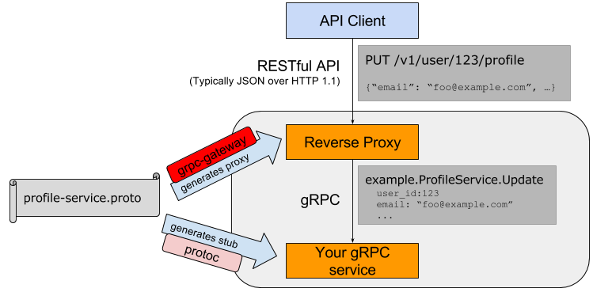
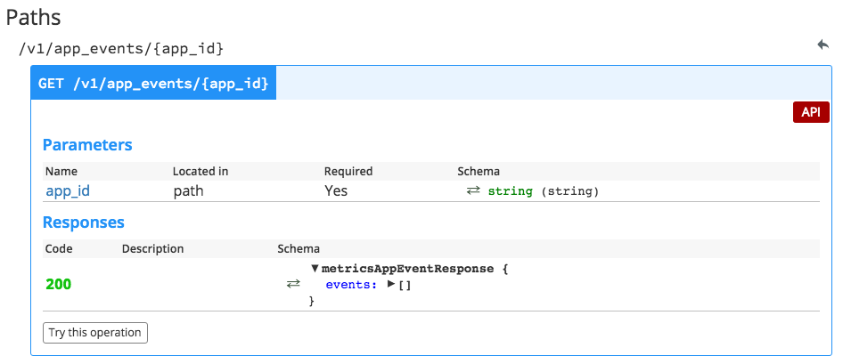

class: center, middle # gRPC Gateway --- # What is gRPC Gateway?  --- # Define your interface ```protobuf message AppEventRequest { string app_id = 1; ... } message AppEventResponse { repeated AppEvent events = 1; } message AppEvent { int32 timestamp = 2; string application_id = 6; string event_name = 7; } service API { rpc AppEvents(AppEventRequest) returns (AppEventResponse) { option (google.api.http).get = "/v1/app_events/{app_id}"; } } ``` The `google.api.http` options are an extension of grpc --- # Implementation ```golang func AppEvents(_ context.Context, req *metrics.AppEventRequest) (*metrics.AppEventResponse, error) { from := time.Unix(int64(req.From), 0) to := time.Unix(int64(req.To), 0) if from.After(to) { return nil, grpc.Errorf(codes.InvalidArgument, "'from' must be before 'to'") } events, err := appEvents.List(req.AppId, from, to) if err != nil { return nil, err } return &metrics.AppEventResponse{Events: events}, nil } ``` * grpc error codes are mapped to http status codes --- # Swagger  --- # Caveats #### Query parameters in Swagger [pull request](https://github.com/grpc-ecosystem/grpc-gateway/pull/199/files) - Only body parameters are included #### Empty json responses [pull request](https://github.com/golang/protobuf/pull/232) - `return &AppEventsResponse{ events: []AppEvent{} }` - returned JSON is `{}` instead of `{ "events": [] }` --- # Resources - [grpc gateway](https://github.com/grpc-ecosystem/grpc-gateway) - source - [core os tutorial](https://coreos.com/blog/gRPC-protobufs-swagger.html) - Take a REST with HTTP/2, Protobufs, and Swagger